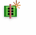
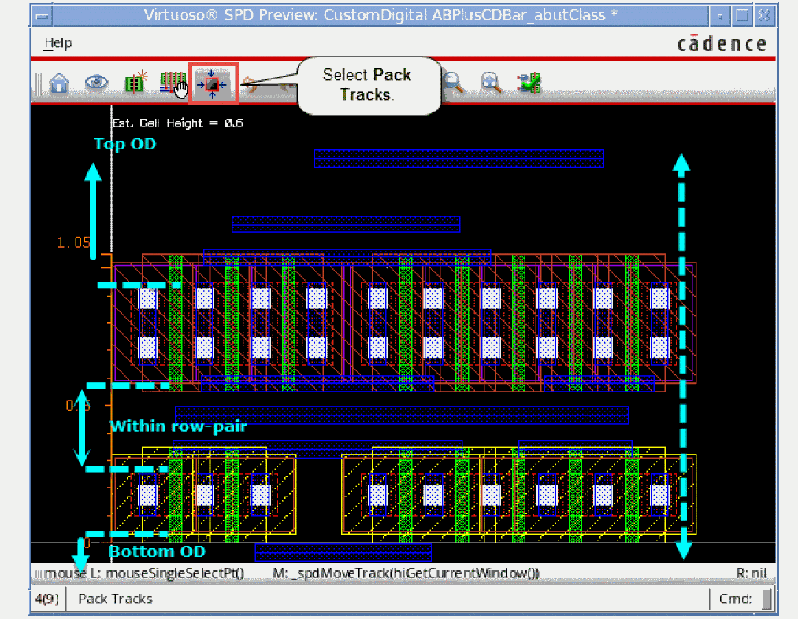

4
Optimizing the Placement and Generating the Layout
After you have created your symbolic placement, you might need to perform some final optimization tasks, such as removing any empty spaces created during editing, adding more devices from the source schematic, or resetting the placement of certain devices. You might also want to preview the edited design before going on to generate a final layout.
You can perform all these tasks using the options in the Place menu in the SPD Editing window. The chapter covers the following topics.
- Appending Components from the Schematic
- Appending Partial Components from Layout
- Removing Symbolic Devices
- Packing the Design
- Resetting Placement
- Displaying Flight Lines
- Reordering and Resetting Trunks
- Probing Selected Nets
- Checking Source or Updating Layout
- Displaying Free Bucket Size of Devices
- Previewing the Design
- Generating the Layout
Appending Components from the Schematic
The Append Selected From Source command makes it possible to add new devices to the SPD design from the source schematic after you have generated a symbolic layout.
To append selected devices from the schematic:
-
Select the schematic instances you want to append.
-
Choose Place – Append Selected From Source or click the Append Selected from Source button on the SPD toolbar.
You can pressF3to display the Append Selected from Source form, where you can specify placement mode for adding devices to the SPD design.If you import a device chain into SPD, then SPD will attempt to chain the devices with a common master after append. To disable automatic chaining of devices after append, clear the SPD Options - Placement - Chaining/Folding - Chain check box. Next, append the selected devices and then use the Sort by Schematic X option while appending devices to get the correct order of devices in SPD.By default, SPD automatically activates the Move command to let you add the selected devices at the desired location in the symbolic design.
To disable the move after append feature, set the spdMoveAfterAppendenvironment variable tonil. If you disable move after append, instances are appended to the tails of P type and N type rows by default. -
Move and append the P-type and N-type devices to respective rows. You can press
Escto append the selected devices to the end of rows.
Appending Devices From Source Based on Whether Horizontal Packing is Enabled
When the Options – SPD – Placement – Auto pack in X direction check box is selected, devices are packed after you append devices from source. However, if this check box is deselected. automatic packing of devices in the horizontal direction does not take place after appending from source.
-
When the Options – SPD – Placement – Auto pack in X direction check box is not selected, devices are not packed after appending from source.
-
When the Options – SPD – Placement – Auto pack in X direction check box is selected, devices are automatically packed after appending from source.
Appending Partial Components from Layout
SPD allows you to partially select hierarchal or hierarchal and vector components in Layout XL and generate an SPD layout for further editing.
The following example shows how you can achieve this.
-
Open your design in schematic.
The following schematic instance is a vector and hierarchal instance. You can select one or more instances in the schematic and then open them in Layout XL. In this example, we select one instance.
- Open Layout XL.
-
In Layout XL, choose Connectivity – Generate – All From Source.
The selected instance opens in the Layout XL canvas. -
Select some devices in Layout XL and click the Generate Symbolic Placement button.
SPD layout is generated with the instances selected in Layout XL.
- Exit SPD.
-
Deselect all devices in Layout XL and generate the SPD layout again.
SPD opens with a blank canvas. - Open the Layout XL window, and partially select some instances.
-
Click the Generate Symbolic Placement button from the Layout XL toolbar.
The SPD command Append Selected from Source is triggered and SPD window is displayed automatically.
Partially-selected devices are added to the SPD layout.
Removing Symbolic Devices
To remove devices from the symbolic design:
-
Select one or more devices.
You can select both P type and N type devices. -
Select the Edit – Remove [
Delete] or click the Remove button on the SPD toolbar.
The selected devices are removed from the design.
If the removed device is part of a chain, the chain might break when you remove the devices. Also, devices are not packed automatically after you remove the devices.
Packing the Design
After working on your design in SPD, you might find that you have created some empty spaces in the canvas, for example, after removing instances from your design. You can remove these spaces by packing the design. To do this:
-
Choose Place – Pack [
p] or click the Pack button on the SPD toolbar.
All empty spaces from the design are removed and the design is packed.
Resetting Placement
The Reset Placement option lets you discard any placement changes you made to the symbolic design and revert to the placement set in the SPD Options form.
You can reset placement in one of the following ways:
-
To reset placement for all the instances currently in the canvas:
Choose Place – Reset Placement – Reset Placement or click the Reset Placement button on the SPD toolbar. -
To reset placement of the selection set that you used to launch SPD and all devices you added using the Append Selected From Source Command:
Choose Place – Reset Placement – Reset Placement & Selection or select the Reset Placement & Selection option from the Reset Placement drop-down menu on the SPD toolbar.
Displaying Flight Lines
SPD provides the following options for displaying flight lines in the canvas:
- Display flight lines for gate and active regions
- Display flight lines for gate nets only
- Display flight lines for active regions only
- Remove all flight lines
Display flight lines for gate and active regions
To display flight lines for both gate and active regions, choose Place – Flight Lines – Both or select the Flight Lines Both option from Flight Lines drop-down menu on the SPD toolbar.
Display flight lines for gate nets only
To display flight lines only for gate nets, choose Place – Flight Lines – Gate Only or select the Flight Lines Gate Only option from Flight Lines drop-down menu on the SPD toolbar.
Display flight lines for active regions only
To display flight lines for only active regions, choose Place – Flight Lines – Active Only or select the Flight Lines Active Only option from Flight Lines drop-down menu on the SPD toolbar.
Remove all flight lines
To remove all flight lines, choose Place – Flight Lines – None or select the Flight Lines None option from the Flight Lines drop-down menu on the SPD toolbar.
Reordering and Resetting Trunks
SPD allows you to convert orthogonal flight lines into initial trunks in the SPD Editor window. You can reorder and set layer, width, and spacing information for these trunks in the SPD Editor. When you generate the layout, these trunks are shown as initial trunks in the layout that you can use to complete Pin-to-Trunk routing in Layout XL.
You can use the SPD Editor to perform the following tasks
Creating Signal Trunks
To create signal trunks in the symbolic design:
- Choose Options – Power Rails – Signal Trunks – Create.
- Specify layer purpose for creating the signal trunks.
- Specify the Width.
- Specify Trunk-Trunk and Trunk-OD spacing.
-
Click OK.
Orthogonal flight lines are converted to and displayed as selectable signal trunks in the design.
-
Click the Preview button.
Reordering Trunks
-
Select the trunk you want to move.
- Click the Reorder Trunks button.
-
Drag it to the location where you want to place it.
- Drop the trunk at the desired location to change its order.
-
The order of trunk changes.
In SPD, trunks are compacted to minimize the number of tracks. Therefore, in the current example, if you try to move net16 higher than net0189, net16 will be still dropped into the empty track.
Resetting Trunk Order
Probing Selected Nets
Probing lets you select nets in the symbolic design to highlight the corresponding element in the schematic window. This helps you interactively explore the design and check that the selected net has a corresponding counterpart in the schematic window and where it is placed in the canvas. You can do the following:
Probe Nets
To probe a net in the symbolic design:
- Choose Place – Probe Net – Probe Net or click the Probe Net button on the SPD toolbar.
-
Select a gate, source or drain of a device in the symbolic design.
The net connected to the selected gate, source or drain is highlighted both in the SPD canvas and the schematic.
Probe Nets and Align Devices
To probe nets and then align the relevant devices:
-
Choose Place – Probe Net – Probe & Align or select the Probe & Align option from Probe Net drop-down menu on the SPD toolbar.
The Probe & Align form is displayed.
- To align pin nets, select Pin Nets from the Show drop-down list.
- Select the nets you want to align.
-
Click Align.
The first gate of the two left-most instances in the adjacent P-type and N-type rows of the selected pin net are aligned, as shown in the figure below.
Probing and Aligning Devices Based on Whether Horizontal Packing is Enabled
When the Options – SPD – Placement – Auto pack in X direction check box is selected, devices are packed after you probe and align devices. However, if this check box is deselected, automatic packing of devices in the horizontal direction does not take place after devices are probed and aligned. The following steps show this difference.
-
Select the net you want to probe and align.
-
When the Options – SPD – Placement – Auto pack in X direction check box is not selected, devices are not packed after align.
-
When the Options – SPD – Placement – Auto pack in X direction check box is selected, devices are automatically packed after align.
Clear All Probes
To clear all probes highlighted in the symbolic design canvas, choose Place – Clear All Probes or click the Clear All Probes button on the SPD toolbar.
For more information on probing, see
Checking Source or Updating Layout
The Check or Update [ Ctrl + u ] command lets you check the differences between the source design and the design open in the SPD Editing window or update the existing objects in the SPD Editing window from the source design.
After you have updated objects in the SPD Editing window, the edits made prior to the update cannot be undone. However, the design before making the update is saved automatically with a version number. Therefore, you can reverse the update, if needed. The version number of the automatically saved design is SPD-COU-nn, where value of nn is 01 - 99. The number resets to 01 after 99.
For information about checking against source and updating component and nets, see
Displaying Free Bucket Size of Devices
By default, SPD displays relative sizes of devices by automatically categorizing them into three-buckets based on their widths– small, medium, and large. However, when device size variations are large, you may want to display the symbolic devices in proportion to their real sizes. You can use the Free Bucket Size option to achieve this. In the free bucket size mode, the design in the SPD Editing window looks approximately similar to the actual layout. This option allows you to enable free size based on either the width or length of the instances.
To enable the free bucket size mode:
-
In the SPD Editing window, choose Place – Free Bucket Size [
Shift+v] or click the Free Bucket Size button on the SPD toolbar.
To enable the free bucket size based on length:
- In the SPD Editing window, choose Place – Free Bucket Size – Free L or select Free L from the Free Bucket Size drop-down menu on the SPD toolbar. By default, free bucket size is enabled for width of the device.
To revert to display free bucket size based on width:
- In the SPD Editing window, choose Place – Free Bucket Size – Free W or select Free W from the Free Bucket Size drop-down menu on the SPD toolbar.
You can also preview gate size in real time. To do this:
-
In the SPD Editing window, choose Place – Free Bucket Size – Gate Size Preview or select Gate Size Preview from the Free Bucket Size drop-down menu on the SPD toolbar.
When free bucket mode is enabled based on width, the smallest device in the design is mapped to the width of the current S or Small bucket. The rest of the devices are scaled proportionally.
The following figure compares the SPD layout in three-bucket-sizes layout and free-bucket-size layout to show how the latter looks much similar to the actual layout.

The following rules apply to the devices in the free bucket size mode:
-
If the size of the smallest device reduces further, the bucket size is updated according to the new width of this device, and the design is rescaled accordingly.
The following commands can change the size of the smallest device:
The following figure shows how appending a smaller device to the design changes the display of devices in the SPD Editing window.
-
If the smallest instance in the design is either stacked or removed, SPD does not update the bucket size.
- If the following commands are used, the bucket size is recalculated:
You can also set SPD to display free bucket size based on instance length. To view free bucket size based on instance length:
- Choose Options – Display.
-
Select Free for Length in the Size for Medium Symbol section.
In this mode, the smallest device in the design is mapped to the length of the current S or Small bucket. The rest of the devices are scaled proportionally.
Previewing the Design
SPD lets you preview the physical layout of the symbolic design before you generate the final layout. You can preview the layout as often as you need to until you are satisfied with the design.
To preview the layout, choose Place – Preview Layout [v] or click the Preview button on the SPD toolbar.
The Virtuoso SPD Preview window is displayed.
The SPD Preview display can be controlled using the e].
The Snap Pattern Display option on the Display Options form lets you configure whether you want to display the boundary, the tracks, the fins or periods for the snap patterns. (ICADVM20.1 Only)

The SPD Preview toolbar provides access to the following commands:
|
|
Close the SPD Preview window and return to the SPD Editing window. |
|
|
|
Enable the Abstracted mode of Smart Display. See View Abstract Preview for more information. |
|
|

|
Generate the final layout and place it in the Layout XL canvas. See Generating the Layout for more information. |
|
|
|
Moves selected tracks vertically in the design preview. See Move Tracks for more information. |
|
|
|
Snaps tracks to correct location with respect to their relative Y positions. See Pack Tracks for more information |
|
|
|
Create ruler objects to measure devices or the distance between devices. See Create Rulers for more information. |
|
|
|
Clear all rulers added to the preview. See Create Rulers for more information. |
View Abstract Preview
The Abstract [a] command in the SPD Preview window enables the Abstracted mode of Smart Display and the connectivity information is displayed in orthogonal flight lines.
The abstract representation of devices makes it easy to identify instance names, instance terminal net names, orientation markers, device parameters and the connectivity that helps you understand the placement in the real layout.
For more information on Smart Display, see
Create Rulers
The SPD Preview window displays the estimated cell height and the actual cell height by default. You can also use the Create Rulers option to create a ruler object to measure devices or the distance between devices. You can also use the command to measure distances between two edges.
-
Select the Create Ruler [
k] button on the SPD Preview toolbar. - Select the first edge.
-
Select the second edge.
A ruler object displaying the distance between two edges is added to the preview.
To remove rulers added to the design, click the Clear Ruler [Shift + k] button on the SPD Preview toolbar.
Automatic Shifting of Additional Tracks
The Auto expand within row-pair spacing option on the Power Rails options pane, enables you to control whether within row-pair spacing is increased to accommodate additional tracks.
When this option is disabled, tracks in the Preview window are shifted automatically over the top oxide diffusion (OD) layer, maintaining the Trunk-to-OD spacing and Trunk-to-Trunk spacing.
However, when this option is enabled, the maximum number of tracks is calculated using the following information:
- trunk width
- spacing information that includes within row-pair, trunk-to-OD, and trunk-to-trunk spacing values.
Within row-pair spacing increases automatically to accommodate the additional tracks.
Move and Pack Tracks
When you choose to create signal trunks on the Power Rails options pane, the following commands are enabled in the Preview window:
Move Tracks
The Move Tracks command enables you to move selected tracks vertically in the Preview window. The selection automatically extends to include or exclude other trunks of the same track so that they can be moved together.
- Choose the Move Tracks command.
- Select the track to move.
-
Drop the selected track at the desired location.
Pack Tracks
The Pack Tracks command snaps all tracks in the design to correct location with respect to their relative Y-axis positions. Tracks are packed into three regions separated by the top and bottom OD layers.
-
Choose the Pack Tracks command.
Tracks in the design are packed within the three regions separated by top and bottom OD layers.
Preview Based on Whether Horizontal Packing of Devices is Enabled in SPD Editor
By default, devices in the SPD Preview window will be packed automatically. However, if both Auto pack in X direction and free bucket size for length are enabled, preview will honor the placement of devices in the SPD Editing window and the devices in the preview will not be packed.
The following steps show this difference.
-
To preview the layout, choose Place – Preview Layout [
v] or click the Preview button on the SPD toolbar.
- Devices are not packed when both of the following conditions are true:
- Devices in the Preview window are packed when either of the following conditions are true:

Generating the Layout

You can generate the layout from the symbolic design in two ways:
Generate Layout from the Preview Window
To generate the layout from the preview window:
-
Select the Generate Layout [
g] button on the SPD Preview toolbar.
The focus changes to the Layout XL window.

-
Click the Layout XL window.
You can pressF3to display the Generate Layout form, where you can specify more precisely where the design should be placed in the Layout XL canvas.
-
Click in the canvas to point the location where you want to place the generated layout.
The generated layout is placed in the Layout XL canvas and the SPD Preview window is closed.
Generate Layout from the SPD Editing Window
To generate the layout from the SPD Editing window:
-
Choose Place – Generate Layout [
g] or click the Generate Layout button on the SPD toolbar.
The focus changes to the Layout XL window. -
In the Layout XL window, point your mouse to the location where you want to place the generated layout.
You can also pressF3to display the Generate Layout form, where you can specify more precisely where the design should be placed in the Layout XL canvas. - The design is placed at the specified location in the Layout XL window and the SPD window is closed.
Return to top